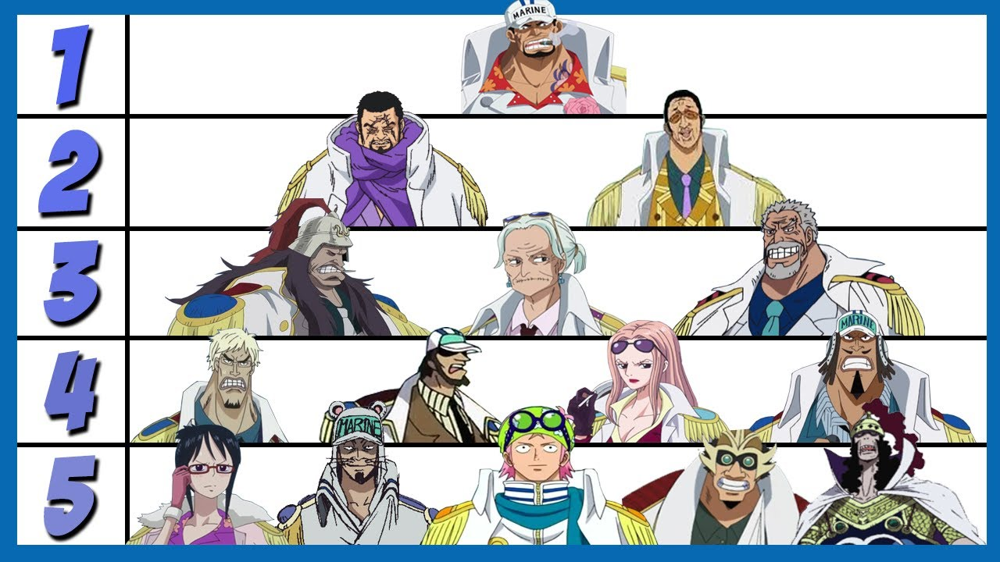

La Marina es la fuerza militar marítima al servicio del Gobierno Mundial encargada de la aplicación de la ley, la seguridad internacional y las maniobras militares. La Marine es uno de los Tres Grandes Poderes junto con los Siete Señores de la Guerra del Mar y los Cuatro Emperadores.
Están presentes en todos los mares del mundo, ya que tienen sedes en todos ellos. Aunque el foco de sus acciones se encuentra en Grand Line, el mar más peligroso.
Debido a sus actividades en general, son uno de los principales grupos de antagonistas de la historia.

Responsabilidades
El deber de la Marina es el de mantener la ley y el orden en todo el mundo e imponer la voluntad del Gobierno Mundial. Por lo tanto, se considera la clave del desarrollo estratégico de la fuerza del Gobierno en el mundo y se espera que obedezca sus órdenes a voluntad. A veces, estas órdenes son cuestionables, sin embargo, se espera que las lleven a cabo con independencia de opinión. Entre sus funciones está la adjudicación de recompensas a los piratas que sobresalgan y necesiten ser eliminados pronto.
Los "cazarrecompensas" son en parte "aceptados" por la Marine para hacer el trabajo mucho más fácil, pero no es seguro que vayan siempre a favor de ésta.
Los infantes de Marine suelen trabajar en parejas con un oficial superior y un segundo en el mando o de subordinación que es de poco bajo rango. Estas asociaciones pueden permanecer incluso durante las promociones con los dos pares al progresar en el rango juntos.
La Marine se basa en una simple jerarquía de acciones: los rangos superiores dan las órdenes a los hombres bajo su mando, mientras que los otros actúan como asesores o recolectores de información, garantizando al mismo tiempo que su socio de mando esté a cargo de los hombres. De los marines de rangos superiores (El almirante de la flota y los almirantes) se esperan que sean los que guíen a las fuerzas de la Marine en la guerra. Esto puede tomar la forma de apresar de muchos delincuentes a la vez, proteger a los Nobles Mundiales o llamar a una Buster Call para abordar una situación. Los vicealmirantes son los que sirven en los barcos que llaman los Almirantes y tienen la tarea de llevar a cabo las órdenes de almirantes exactamente.
El objetivo principal de la Marine para permanecer en pie es la idea de traer la justicia a cualquier delincuente. Utilizan la Justicia como su política constituyente para gestionar un mundo que está hecha de un mar mucho más fácil. Sin embargo, el principal problema dentro de la Marine es el enfoque a la justicia. Por lo general se divide entre aquellos que apoyan la "Justicia Moral" y los que apoyan la "Justicia Absoluta" con el último siendo el código de conducta para los Marines como norma. Sin embargo, hay poca preocupación por los cargos más altos en cuanto a la forma en que la Justicia se lleva a cabo siempre y cuando lo sea, llevando esto a quienes realmente apoyan la justicia absoluta a realizar acciones completamente cuestionables.